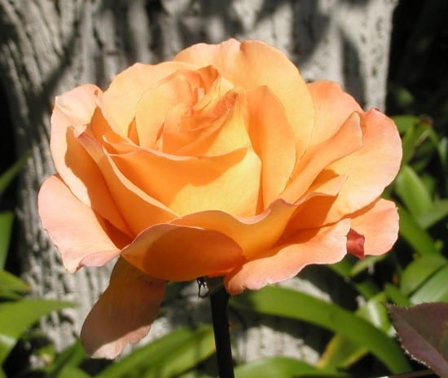
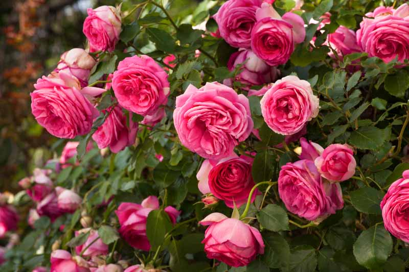
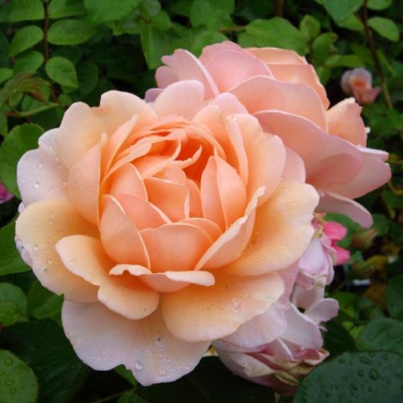
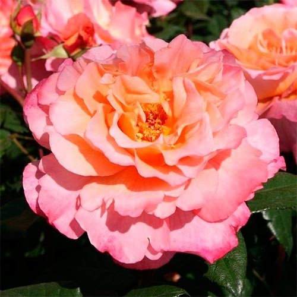

წარმოუდგენლად ლამაზი ვარდი, უჩვეულო შეფერილობით და მკვრივი კოკრით.
ის ეტალონად არის აღიარებული და სავსებით დამსახურებით ატარებს «ასწლეულის ვარდის» ტიტულს.
ვარდის ეს უნიკალური ჯიში XX საუკუნის 30-იან წლებში გამოჩნდა. მისი განსაკუთრებულობა ფერშია

«Whisky» («ვისკი»)
«ვისკი» ჩაის-ჰიბრიდული ვარდია და მიუხედავად იმისა, რომ ძალიან რთულად მოსავლელია და ვარდის დაავადებების მიმართ არამდგრადია, მისი სილამაზე იმად ღირს, რომ ამ ნაკლზე თვალი დავხუჭოთ. აქვს ულამაზესი მუქი ყვითელი ყვავილი. ხოლო, მისი არომატი იმდენად ძლიერია, რომ ადამიანს აბრუებს და ოცნების სამყაროში მიჰყავს.

«Eden Rose» («სამოთხის ვარდი»)
სამოთხის ვარდი ხეივნის ვარდების ნაირსახეობას განეკუთნება. მას კრემისფერი მკვრივი და მძიმე კოკრები აქვს, ხოლო გაშლილ ვარდს გვირგვინის ფურცლის კიდეები ღია ვარდისფრად აქვს დაფერილი. თუმცა ეს მისი ერთადერთი ვარიანტი არ არის – არსებობს სხვა, არანაკლებ ლამაზი ფერებიც. ვარდის ეს სახეობა განსაკუთრებით უყვარდა ფრანგ მსახიობს ლუი დე ფიუნესს და თაყვანისმცემლები მას სწორედ ამ ვარდის ულამაზეს თაიგულებს ჩუქნიდნენ.

«Sweet Juliet» («ტკბილი ჯულიეტა»)
და ეს სახელი ძალიან უხდება ვარდის ამ სახეობას. არომატი ისეთივე აქვს, როგორიც ჩაის ვარდის სხვა სახეობებს, ხოლო ფერი – გრადიენტულია: გვირგვინის ცენტრში ატმისფერი ფურცლებია აქვს, ხოლო ცენტრიდან მოშორებით, თანდათანობით ღიავდება და ღია ვარდისფერით, თითქმის თეთრით ფურცლებით სრულდება.

«Аugusta Luise» («ავგუსტა ლუიზა»)
წარმოუდგენლად ლამაზი ვარდია, დიდი ზომის ყვავილებით და სქელი ხავერდოვანი ფურცლებით. ფერის ტონალობა ამინდის ზაგავლენით იცვლება, შეიძლება იყოს ვარდისფერი ან მოყვითალო-ნარინჯისფერი – შამპანურის ფერი.